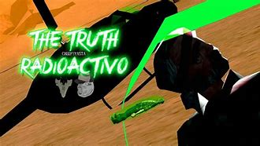

El motel jefferson en el gta sa, es un lugar bastante conocido por toda la comunidad de
este juego, devido a que este lugar da una sensacion extraña cuando el jugador pasa por ahi,
existe la creencia que al inicio del juego, si haces ciertos pasos desbloquearas una animacion rara.
2. Los ovnis en el juego
Los ovnis en el juego, es un tema de debatir sobre su veracidad y esto se justifica con un mapa ubicado en un bar cerca del "Area 69", en dicho mapa se muestra
unos puntos marcados en el mapa del juego, se tenia la creencia que si ibas a estos puntos en ciertas condiciones del juego, se podria observar avistamientos de dichos seres, esto termino siendo mentira y solo seria posible con el uso de mods, sin embargo, rockstar dicidio añadir estos en GTA 5 en forma de easter egg.
3. Pie grande
Pie grande es un ser de leyenda , muchos usuarios de este juego; en especial en versiones mas antiguas del juego como en ps2, xbox classic, han reportado apariciones de este ser, en especial en zonas boscosas como en el monte chiliad cerca del pueblo de Angel Pine, se dice que
este mismo es el causante de algunos desastres que pasan por esas zonas, pero esto fue desmentido por un desarrollador de Rocksta, afirmando que pie grande nunca fue añadido al juego, llegando asi a la conclusion que este misterio es Fake.
4. The Truth y el cieno verde
Durante la historia del juego, "TRUTH" que es un personaje secundario de este juego, nos pide realizar un par de misiones para el, para ser mas especifico el la mision en la que debemos robar el cieno verde, un tipo de material muy especial,
Truth nos pide robarlo de un tren que estaba protegido por militares, al final de esta, Truth se marcha junto con el Cieno verde y surge la pregunta de para que utilizaria este personaje dicho material aparentemente radioactivo y hasta la fecha sigue siendo uno de los misterios mas grandes de este juego.

5. veiculos fantasma
En ciertas partes del mapa, como en pueblos o zonas rurales, existe la posibilidad que aparezcan coches fantasma, como su nombre lo dice, son coches que tienen aspecto demacrado y varios usuarios reportan que han llegado a precenciar que estos tienen movimiento autonomo, es decir que no tienen chofer, esto resulto ser verdadero pero no significa se se
deba necesariamente a un fantasma, si no que esto es generado gracias a un bug del juego y una mala programacion de estos coches, explicando asi el porque de sus movimientos, otro dato a destacar es que no importa si llevas estos coches a reparar, estos eguiran igual de viejosos y destruidos.